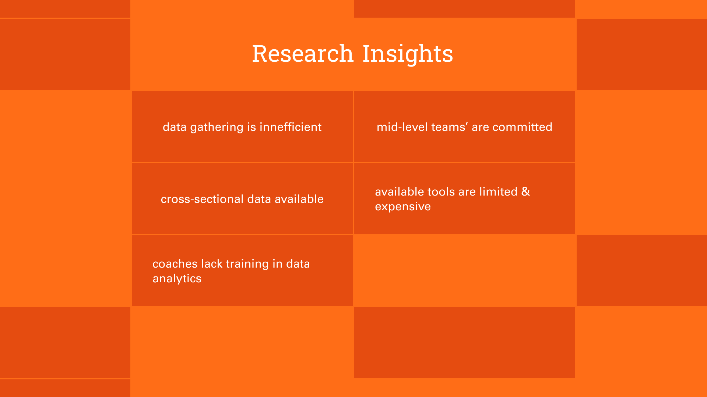
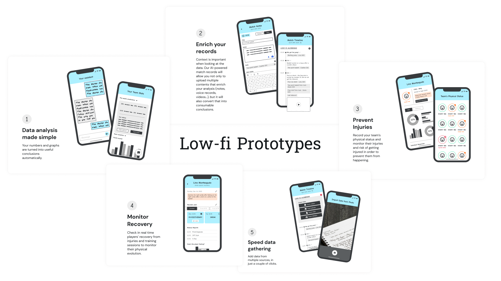
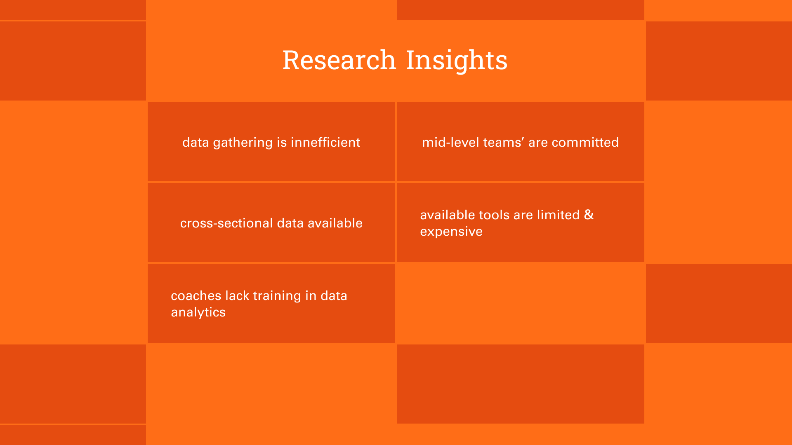
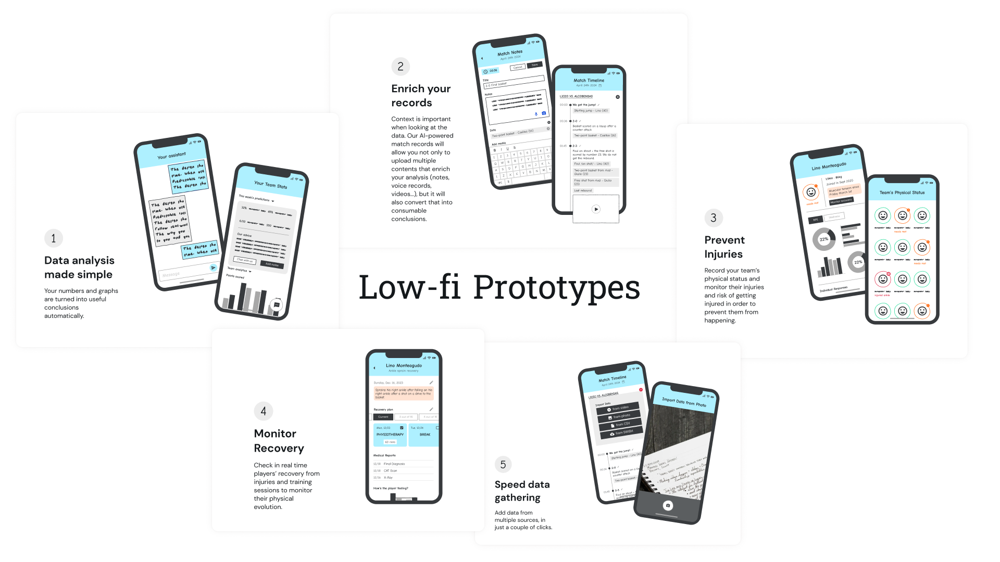
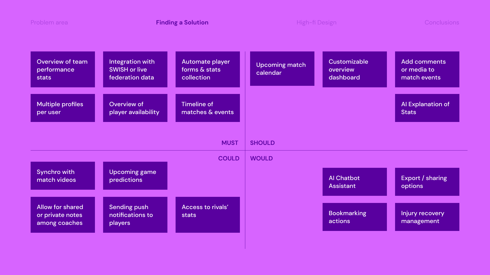
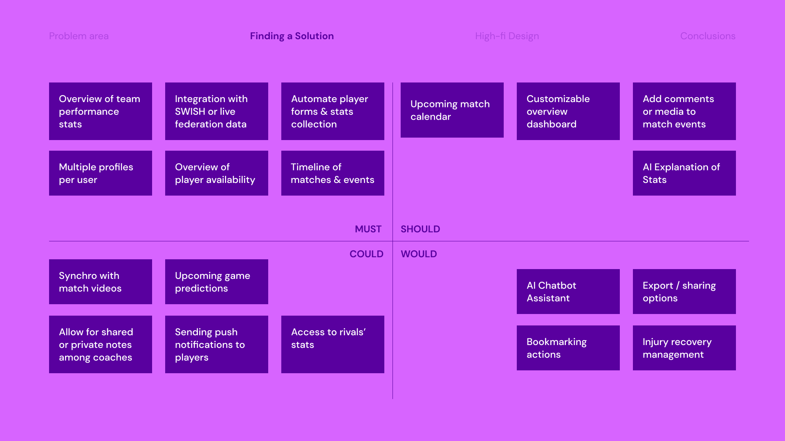

KOACH is my Capstone project for my Master's at Parsons School of Design.
Data is increasingly vital in sports, especially in basketball, where games generate vast amounts of analytics every minute. Research has shown that strategic investment in analytics can lead to superior athletic performance, reduced injury risks, and even increased revenues. In the US, data is fully integrated into coaching practices, harnessing these benefits. However, teams in Spain are falling behind due to limited budgets, lack of time, and inadequate training. This has forced coaches to rely on manual, time-consuming processes that often result in inaccurate data, erroneous conclusions, and thus, a waste of time and energy. Consequently, data analysis in mid-level teams is both inefficient and ineffective.
KOACH was developed to empower coaches to manage their teams effectively in a data-driven manner.
The workflow of the project is segmented into various phases, ranging from discovery (including primary and secondary research, competitive analysis, observational research, and exploratory interviews) to the creation of low- and mid-fidelity prototypes that were iteratively refined based on user testing, culminating in a branding project applied to high-fidelity prototypes.
This project was particularly challenging due to its intensive data component, requiring not only self-training in sports and basketball analytics but also a thorough exploration of data mapping and the definition of data visualization patterns.

 



 
